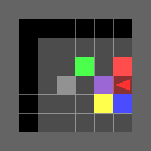
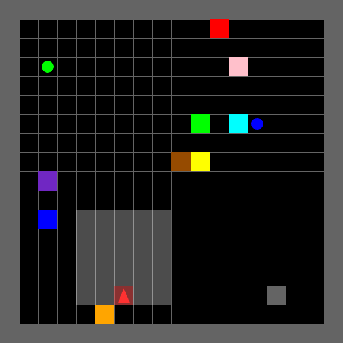
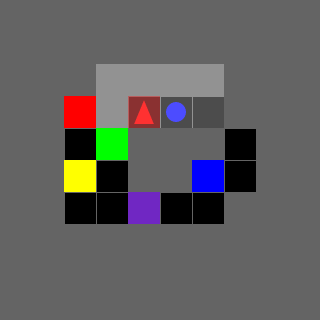
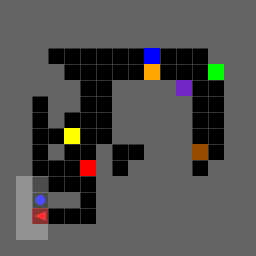

Example Maps
A curated set of representative maps for website showcase.

No Corridor (Small, Clean)
Empty room with static flags only. Small size, no action or observation noise.
View details →

No Corridor (Large, Noisy)
Empty room with more flags and injected action/observation noise.
View details →

Carved Corridor (Small, Clean)
CarvedPathRoom corridor map with small size and no noise.
View details →

Carved Corridor (Large, Noisy)
Larger carved corridor with action/observation noise enabled.
View details →